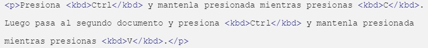

Kbd
The kbd element represents a user input that can be done by keyboard or any other medium, such as a mouse, touch screen or voice commands. Example: The first example contains instructions for copying and pasting text. The keys that are to be pressed are enclosed by the element kbd, since they represent the entry that the user should execute.
Press and hold Ctrl while you press C. Then it moves to the second document and press Ctrl and hold it while you press V.
Keyup
Keyup() is to detect the pressure of the keyboard keys in a simple and effective way. Difference between keyup() and keypress():
- Keydown()- Press the key, start pressure.
- Keypress()- The key is pressed.
- Keyup()- The key is released.